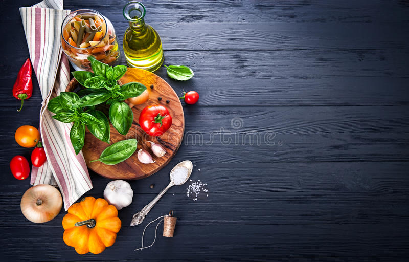

Hi there!
Cool calm and collective type of person
Cooking
When I was a little kid, I used to help my mother and grandmother in the kitchen.They would always make my favourite dishes. Watching them cook since I was a kid, made me want to try out. Not everyone in this world loves to cook. However, those who love cooking are truly lucky, as well as their families. It is a great experience that makes happy and makes others happy as well.
gaming

i enjoy playing video games of all different platforms but mostly pc as i can freely edit and customize the files to my liking and modify them.My favourite kind of games to play are action,simulation,role playing,shooter and multiplayer.
TRAVELLING

I like going on adventures and visiting new places whether it is to drive or take a flight with friends or family